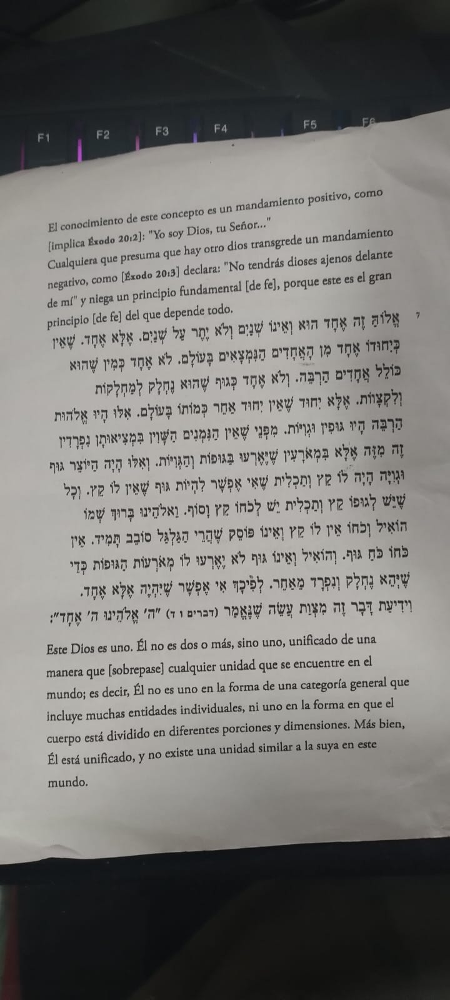

Avión para pekositos
Encabezado tipo 2
texto en párrafo alineado en el centro
parrafo siguiente alineado a la derecha
párrafo en la izquierda
Exquisito, sabias que a continuación salto de linea
la lista a continuación:
- ul para generar lista con viñetas, ol con numeros
- ul para generar lista con viñetas negrita
- ul para generar lista sub indice con viñetas etiquetas

Ejemplo de lista ordinal
- Elemento 1
- Elemento 2
- Elemento 3
- Elemento 4